13. ANCOVA
In this lecture we aim to:
- Introduce ANCOVA
- Implications of multiple predictors
- Show ANCOVA in JASP
Reading: Chapter 12 (§12.1–12.12)
ANCOVA
ANCOVA
Determine main effect while accounting for covariate
- 1 dependent variable
- 1 or more independent variables
- 1 or more covariates
A covariate is a variable that can influence the DV. By adding a covariate, we reduce error/residual in the model.
Applet
Set \(\alpha\) before the data
- \(\alpha = 0.005\)
“We propose to change the default P-value threshold for statistical significance from 0.05 to 0.005 for claims of new discoveries.”
Benjamin et al. (2018): Redefine statistical significance, 72 authors
Data example
Puppy therapy again (lecture 12), but now we also measured how much each person loves puppies.
- Dependent variable: Happiness
- Independent variable: Dose (#groups \(= k = 3\))
- No puppies (\(n = 9\))
- 15 mins (\(n = 8\))
- 30 mins (\(n = 13\))
- Covariate: Puppy love (0–7)
Define the model
\[{happiness} = {model} + {error}\]
\({model} = {independent} + {covariate}\) \(\color{white}{model} = {dose} + {puppy \; love}\)
\(\color{white}{model}\)
Linear model with \(k-1\) dummy variables:
\[\hat{y} = b_0 + b_1 {dummy}_1 + b_2 {dummy}_2 + b_3 covar\]
The data
Dummies
Observed group means
aggregate(happiness ~ dose, data, mean) dose happiness
1 No puppies 3.222222
2 15 mins 4.875000
3 30 mins 4.846154Model fit without covariate
What are the beta coefficients when we fit a model that only has dose as a predictor variable?
fit.group <- lm(happiness ~ dose, data); fit.group$coefficients(Intercept) dose15 mins dose30 mins
3.222222 1.652778 1.623932 \(b_{0} = 3.22\)
\(b_{15min} = 1.65\)
- Prediction for 15 mins: 3.22 + 1.65 = 4.87
\(b_{30min} = 1.62\)
- Prediction for 30 mins: 3.22 + 1.62 = 4.84
Model fit with only covariate
What are the beta coefficients when we fit a model that only has puppylove as predictor variable?
fit.covar <- lm(happiness ~ puppylove, data); fit.covar$coefficients(Intercept) puppylove
3.6568758 0.2596796 \(b_{0} = 3.66\)
\(b_{love} = 0.26\)
Model fit with all predictor variables (factor + covariate)
What are the beta coefficients when we fit the full model (i.e., with both predictor variables)?
fit <- lm(happiness ~ dose + puppylove, data); fit$coefficients(Intercept) dose15 mins dose30 mins puppylove
1.7891883 1.7856801 2.2248813 0.4160421 \(b_{0} = 1.79\)
\(b_{15min} = 1.79\)
\(b_{30min} = 2.22\)
\(b_{love} = 0.42\)
Predictions of the full model
For someone in the 15 mins group with a score of 4 on puppy love:
fit <- lm(happiness ~ dose + puppylove, data); fit$coefficients(Intercept) dose15 mins dose30 mins puppylove
1.7891883 1.7856801 2.2248813 0.4160421 \(b_{0} = 1.79\)
\(b_{15min} = 1.79\)
\(b_{love} = 0.42\)
- Prediction for 15 mins: 1.79 + 1.79 + 4 * 0.42 = 5.26
How about someone in the 30 mins group with a score of 1 on puppy love?
Visual \({SS}_{total}\)
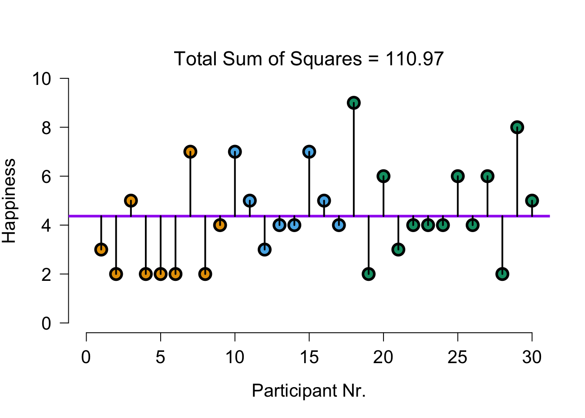
Explained by group model
The model that predicts only using group means:
\(\hat{y} = b_0 + b_1 {dummy}_1 + b_2 {dummy}_2\)
\(\hat{y} = 3.22 + 1.65 \times {dummy}_1 + 1.62 \times {dummy}_2\)
Visual \({SS}_{model}\): group
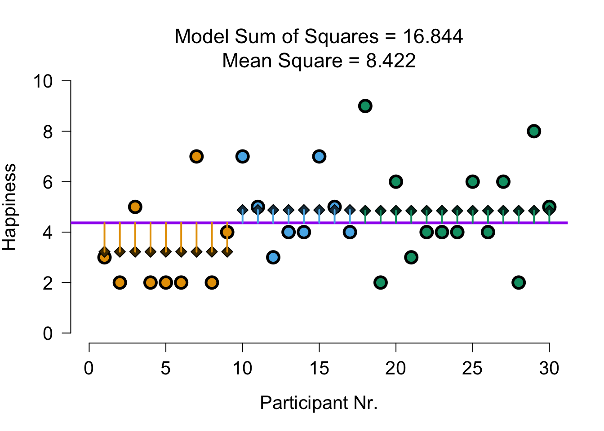
Explained by covariate model
The model that predicts only using puppy love:
\(\hat{y} = b_0 + b_3 covar\)
\(\hat{y} = 3.66 + 0.26 \times {Puppy \; love}\)
Visual \({SS}_{model}\): covariate
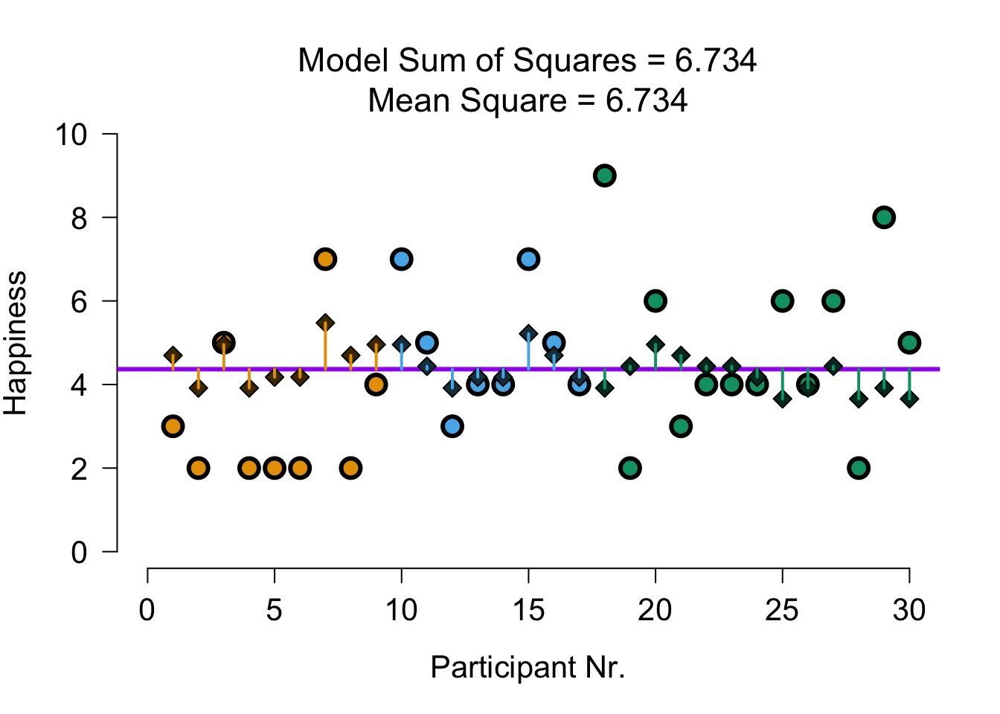
Explained by full model
The model that predicts with group and covariate:
\(\hat{y} = b_0 + b_1 {dummy}_1 + b_2 {dummy}_2 + b_3 covar\)
\(\hat{y} = 1.79 + 1.79 \times {dummy}_1 + 2.22 \times {dummy}_2 + 0.42 \times {Puppy \; love}\)
Visual \({SS}_{model}\): group + covariate
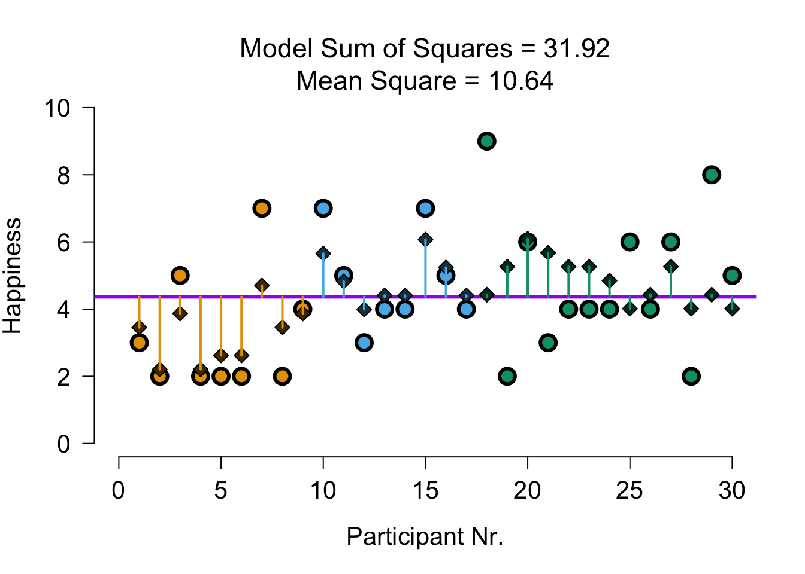
Visual \({SS}_{residual}\): group + covariate
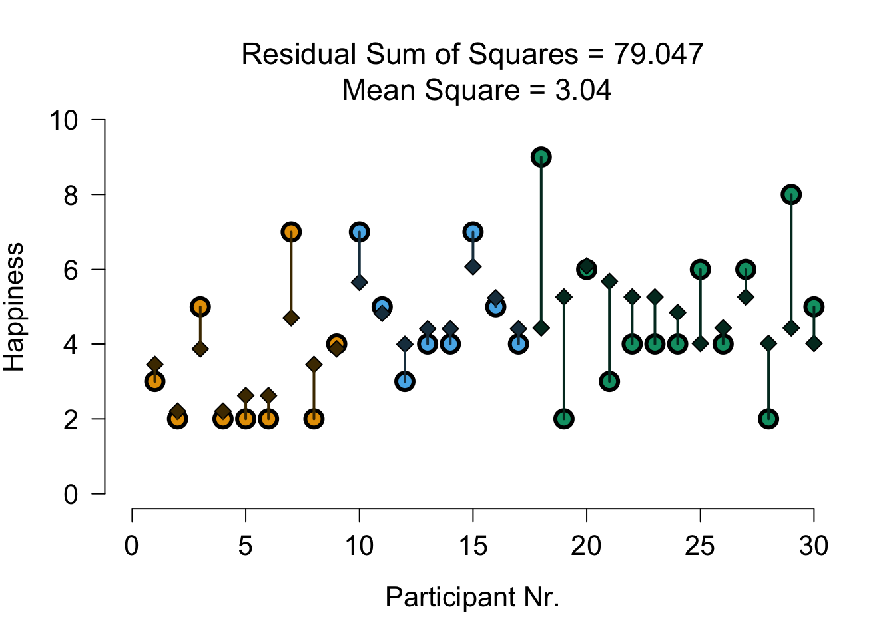
Divide model sum of squares
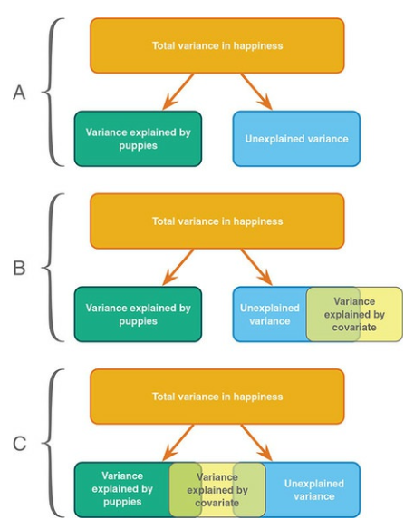
Divide model sum of squares
Model SS of full model:
SS.model[1] 31.91955To see what is explained by group, we subtract the Model SS of the covariate model:
SS.group <- SS.model - SS.model.covar; SS.group ## SS.group corrected for covar[1] 25.18519To see what is explained by covariate, we subtract the Model SS of the group model:
SS.covar <- SS.model - SS.model.group; SS.covar ## SS.covar corrected for group[1] 15.07575Why don’t the parts add up?
| Dose | Puppy love | Sum | |
|---|---|---|---|
| Alone (one-predictor model) | 16.84 | 6.73 | 23.57 |
| Unique (full model minus the other) | 25.19 | 15.08 | 40.27 |
| Full model | 31.92 |
- Usually (redundancy): alone parts add up to more than the full model, unique parts to less
- Here it’s reversed (suppression, p. 340)
- The 30-min group loves puppies least, which causes dose and puppy love to suppress each other’s effect
F-ratio
\(MS_{model-group} = \frac{25.185}{2} = 12.593\)
\(F = \frac{{MS}_{model-group}}{{MS}_{residual}} = \frac{{SIGNAL}}{{NOISE}} = \frac{12.593}{3.04} = 4.14\)
\(p\)-value
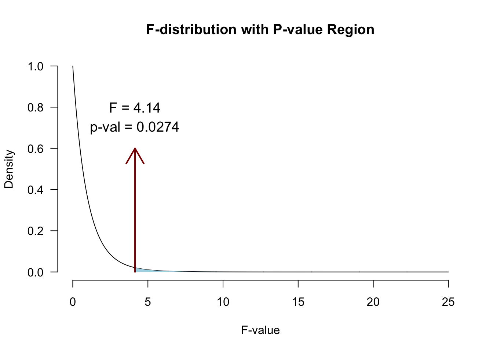
What if we ignore puppy love?
Without puppy love (Output 12.4):
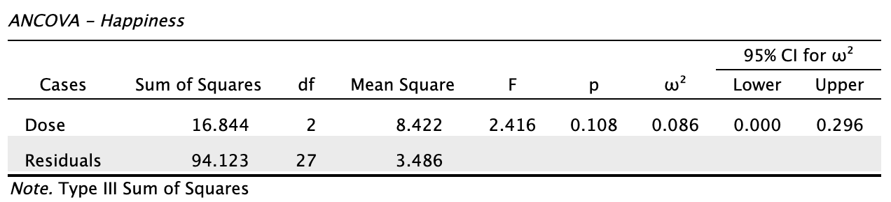
With puppy love (Output 12.5):
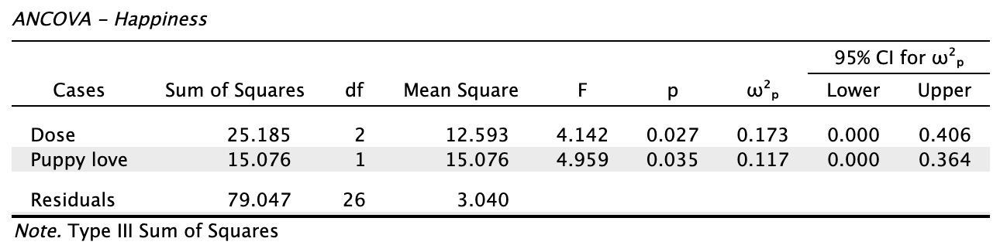
- \({SS}_{residual}\): 94.12 → 79.05; effect of dose: \(p\) = 0.108 → \(p\) = 0.027 (§12.7)
Alpha & Power
Power becomes quite abstract when we increase the complexity (i.e., number of predictors) of our models. We can make an F-distribution that symbolizes the alternative distribution by shifting the distribution more to the right (although the interpretability becomes pretty murky..)
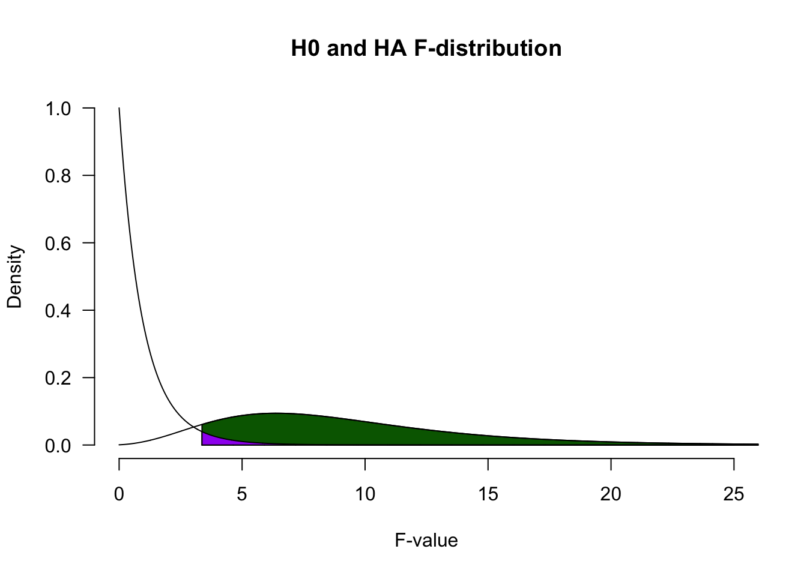
Adjusted/marginal means
Marginal means are estimated group means, while keeping the covariate equal across the groups
What are happiness averages in each group, if they would all score the same on puppy love?
See also this blogpost
Adjusted/marginal means
Adjusted:
dose mean.adj
1 No puppies 2.926370
2 15 mins 4.712050
3 30 mins 5.151251Observed:
dose happiness
1 No puppies 3.222222
2 15 mins 4.875000
3 30 mins 4.846154Assumptions
- Same as ANOVA
- Independence of the covariate and treatment effect §12.5.1.
- No difference on ANOVA with covar and independent variable
- Matching experimental groups on the covariate
- Homogeneity of regression slopes §12.5.2.
- Visual: scatterplot dep var * covar per condition
- Testing: interaction indep. var * covar
Independence of the covariate and treatment effect (Fig 12.2)
Independence of the covariate
- Groups should not differ on the covariate (§12.5.1)
- Otherwise: covariate and group share variance (Fig 12.2C)
- Associated predictors can inflate/deflate the group effect (F, adjusted means)
- Does not “control for” the group difference
- Interpretation problem, not a statistical requirement (Jane Superbrain Box 12.1)
- Risk mostly without random assignment
- Assess: ANOVA with covariate as dependent variable (§12.6.3)
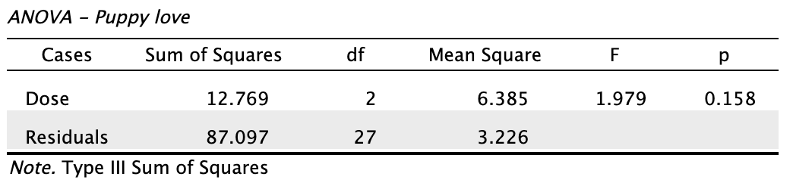
Homogeneity of regression slopes
- One slope for the covariate: parallel lines (§12.5.2)
- Assumes the same covariate-DV relation in every group
- Unequal slopes:
- Interpretation: effect of dose depends on puppy love (§12.8)
- Inflated Type I error (Jane Superbrain Box 12.2)
- Assess: add the interaction dose * puppy love to the model (§12.8)
- Descriptives plot: are the lines per group roughly parallel?
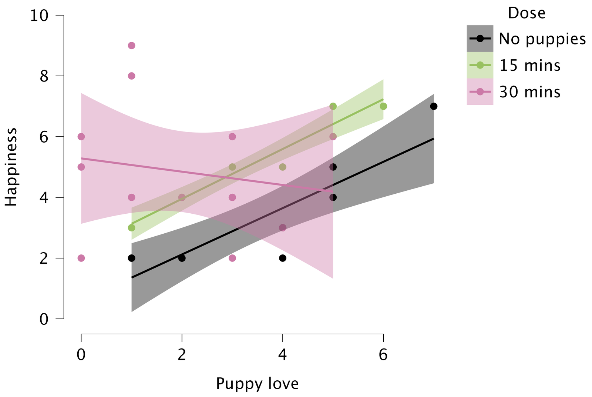
What does “dose” mean here?
| Puppy love | No puppies | 15 mins | 30 mins | Dose: p |
|---|---|---|---|---|
| 0 | 0.59 | 2.31 | 5.28 | 0.003 |
| 2.73 (average) | 2.68 | 4.55 | 4.69 | 0.025 |
| 5 | 4.41 | 6.41 | 4.19 | 0.138 |
- Each dose has its own slope, so the dose effect depends on puppy love
- In the model with the interaction, “Dose” compares the groups at puppy love = 0
- Interaction present: little value in interpreting the main effect (p. 568)
JASP
Closing
Recap
- We can add a continuous predictor to the ANOVA model, to reduce the overall model error
- With multiple predictors, we need to check:
- Whether there is an interaction effect
- An existing interaction effect gives crucial context to main effects
- Whether the predictors are associated
- Associated predictors can either increase or reduce each other’s unique contributions to explained variance
- Whether there is an interaction effect
Exam note: checking assumptions
What you should know: how to assess, robust alternatives, and why these assumptions matter
- No assumption NHST (Shapiro-Wilk, Levene’s) on the exam (see Jane Superbrain Box 6.7)
- Normality: Q-Q plot of the residuals, with confidence interval
- Assumption Checks → Q-Q plot residuals → Confidence interval
- Points outside the band suggest non-normality
- Equal variances: ratio of the largest to the smallest variance (Section 6.9.6)
- Ratio of 2 or more suggests unequal variances
- Equivalently for sd’s: ratio of \(\sqrt{2} \approx 1.4\) or more
Exam note: robust alternatives
- Unequal variances:
- Welch \(t\)-test
- Welch \(F\) (one-way ANOVA only: Assumption Checks → Homogeneity corrections)
- Non-normality: nonparametric test (Chapter 15; lecture 20)
- Mann-Whitney, Wilcoxon signed-rank, Kruskal-Wallis
- Question can give a decision rule, e.g., “use nonparametric test if more than 5 points fall outside the Q-Q confidence band”
- ANCOVA: no robust version, so have to eat the grain of salt if normality or variances seem problematic
Exam note: ANCOVA assumptions
- Independence of the covariate and treatment effect
- ANOVA with the covariate as dependent variable
- What it means: groups differ on the covariate
- Homogeneity of regression slopes: interaction covariate * independent variable
- Model → Model Terms: add or remove the interaction
- What it means: effect of the covariate differs between groups
Next Time
- Extensions of ANOVA:
- Adding a second categorical variable (lecture 17)
- Within-subjects measurements (lecture 18)
- Mixed designs (lecture 18)
Recommended Exercises
Labcoat Leni 12.1
Muris et al. (2008): Space invaders
Does negative feedback training make children interpret situations more negatively?
training: positive vs. negative feedback in 30 scenariosint_bias: high = interprets situations negatively- Adjusting for
age,genderandscared(child anxiety)
Contact